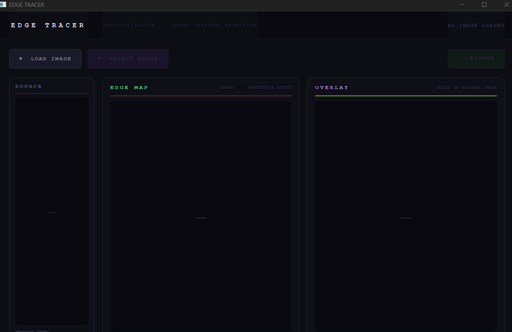

Open the Edge Tracer details
Explore the GUI concept and see the before/after processed image examples for lighthouse, piano, and desk.
Click hereEdge Tracer is a desktop tool that applies a simplified Canny pipeline to input images, producing a clean edge map and an overlaid result. Thresholding is auto-calibrated, so the user can load an image and see the extracted contours without adjusting sliders.
The implementation uses NumPy and Pillow in a PyQt6 interface. It makes edge detection accessible by showing the result in a compact side-by-side presentation and exporting the finished output as a PNG image.
Requirements: See the Run & Download page or open requirements.txt for required packages.

Explore the GUI concept and see the before/after processed image examples for lighthouse, piano, and desk.
Click here